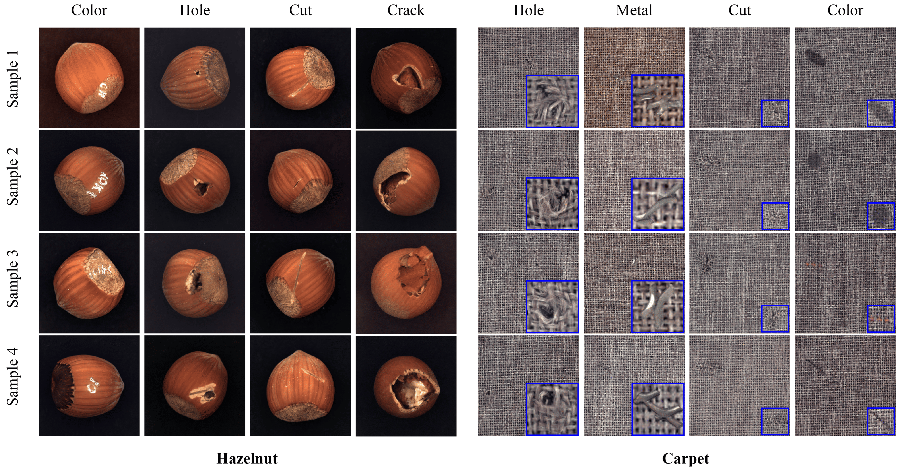

Visualization Results

In DiffusionMix, two Denoising Diffusion Probabilistic Models (DDPMs) are used, one of which is trained with a 4-channel input (RGB + mask). The object diffusion model generates an object image along with its corresponding segmentation mask within a given bounding box, while the background diffusion model synthesizes the rest of the scene. The outputs from the two models are progressively merged during the denoising process, allowing interaction between the object and background and resulting in a naturally blended composition.

Image placeholder'" />Visual results for the composition of anomaly (object diffusion) and normal image (background diffusion) on MVTec Dataset. During denoising, the object and background influence each other, gradually adapting to reflect mutual changes. For example, in the Hazelnut dataset, anomalies blend into normal hazelnut images while the surrounding background adjusts accordingly. Notably, in crack anomalies, even when the anomaly deviates from the hazelnut’s natural round shape, the hazelnut structure wraps around it, producing realistic results. Similarly, in the Carpet dataset, woven patterns seamlessly connect between the anomaly and the background, demonstrating organic integration. This behavior is enabled by the resampling process, where anomalies and backgrounds are generated interactively, allowing for more coherent and natural compositions.